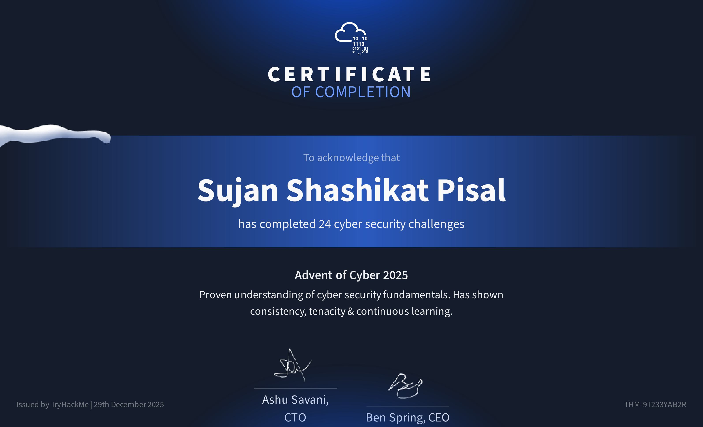

Certifications

Advent Of Cyber 2025
Try Hack Me

Ethical Hacking
Boston institute of Analytics
Cyber Security
Boston institute of Analytics
Projects
Scratcher-Recon
Tools : Bash Scripting, Git, httpx, Nmap, Subfinder, Findomain, Gf
Streamlined the user experience with a flexible, modular scan menu (Subdomains, URLs, Nmap, GF) that provides complete control over the scanning process.
Reduced scan time by 40% by implementing HTTPX smart filter.
Download Documents
Access my full professional profile and cover letter below.